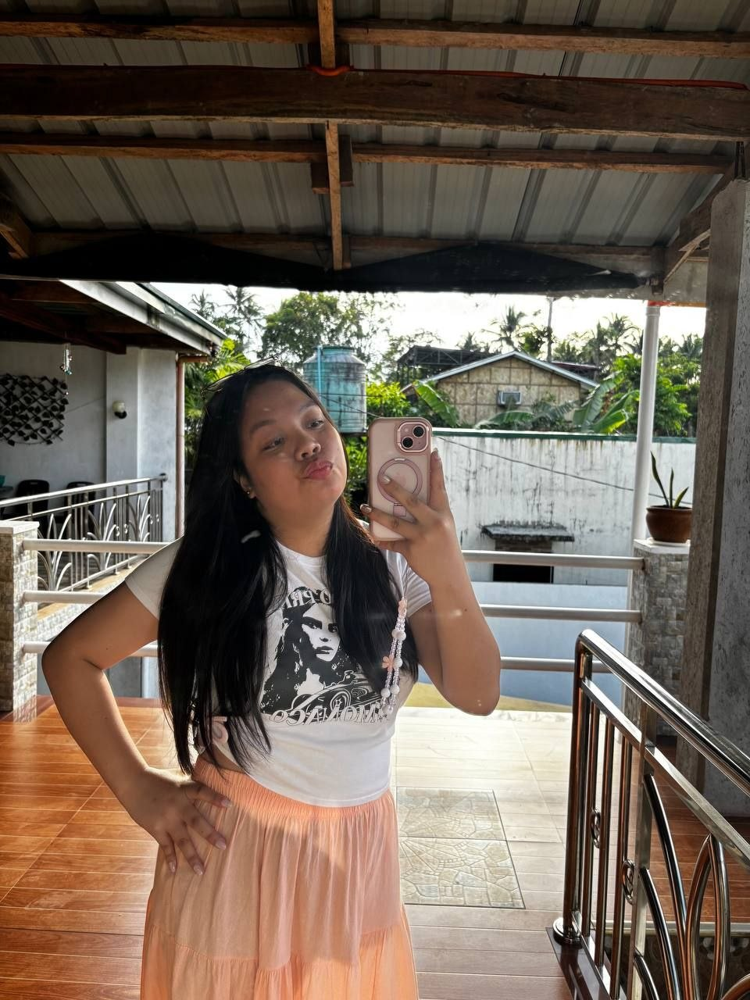

Lampara de Nito
Empowering and Promoting the Use of Local Materials
Province & Nito Fern Facts
Aklan is a province in the Western Visayas referred to as "The Shining Gem of Northern Panay". It is also a home to one of the most celebrated festivals, which is the "Ati-Atihan Festival".
Crafting Identity
Aklanons are gifted in creativity and craftmanship. One of the most popular techniques is weaving, and one of the popular types of this is Nito weaving. Weavers are said to spend most of their time holding into Nito vines to form something creative out of
Handicrafts
Aklan's handicrafts are known in the art sector. It is known for beng the "Queen of Philippine Fabrics" and famous for their God-gven talent in weaving.
Did You Know? (Fun Facts!)
• Fern Family: Nito comes from an ancient family of climbing ferns that has thrived on Earth for over 200 millon years, dating all the way back to the dinosaur era.
• Acts like a Mountain Climber: Nito ferns uses its flexible, growing main axis (rachis) to twine tightly to trees and rock faces, pulling itself up out of the shady forest to reach the sunlight.
• 10 Meter Fern Climber: As Nito fern is known as a climbing fern, it can develop climbing fronds that reach approaximately 10 meters long due to its flexible rachis that twists around nearby begetation, allowing it to spread upward through the forest.
Place of Origin
Nito grows in many parts of the Philippines, especially in forests at low and medium altitudes. One of the places where nito grows best is the province of Aklan, where weavers source the wild vine from forested towns such as Nabas, Ibajay, and Buruanga. Aside from Aklan, the vine also grows in the forest areas of Mindanao in Southern Philippines and other places like Mindoro, Surigao del Sur, and Iloilo.
Source Plant
Nito comes from the nito plant (Lygodium circinnatum), which is a climbing fern belonging to the fern family. The part of the plant used for crafting is its stem, which grows like a vine that climbs around trees and rocks. This stem is long, thin, and durable, and the weaving strips are taken from it, specifically from the inner core of the stem, while the outer layer is removed.
Common Products
The common products that are made from Nito materials are handwoven baskets, decorative jars, bags, and homedecors.
References & Links
Explore primary documentation, government archives, and research publications on Nito craft preservation:
Procedural Craft Video of Nito Lamp
Watch how group 4 utilized Nito material into crafting a creative lamp!
16-Step Crafting Guide
Group 4 Members
Kyleen Niezka A. Balmaceda
Crafter
Brenda Aya Chloe Montives
Crafter
Niña Malana Capal
Crafter

Venice Huergula
Crafter
Angela Balahadia
Crafter

Zyan Rejoyce Rivera
Crafter
Joem Cornista
Crafter
Chris Lee Gaveria
Crafter
Johnver James Alvior
Crafter